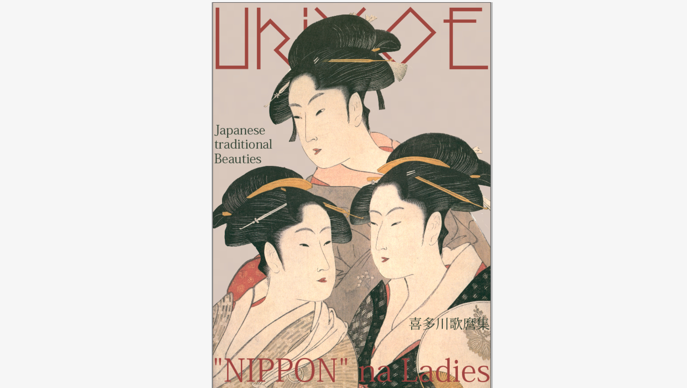

プロN
1Q: 宇宙の未来をつくるエンタメビジネス
取り組んだテーマ：XRを媒体にした二つのサービス （惑星プラネタリウム、惑星の風雲児）
このプロジェクトを通して学んだ力・知識
プレゼン力
スライドを制作して、キャンパス内発表、全国発表をした。めちゃくちゃ緊張した。
「こんなお悩みありませんか？」と問いかけることで聴く側の人を引きつけれるように工夫した。
2Q: オンラインリアル脱出ゲーム
7月〜9月
取り組んだテーマ：ハッキングからの脱出ゲーム
このプロジェクトを通して学んだ力・知識
サイト制作能力
HTML、CSSを使ってサイトを制作した。慣れないことばかりでなかなか難しかったけどなんとか完成できた
画像加工
作った謎を画像にしたり、サイトのトップページの画像を作ったりした。
謎の製作力
野菜の漢字の謎を作った。結構難しかった。
3Q: ローカルSDGs特集番組制作プロジェクト
10月〜12月
取り組んだテーマ：SDGsの歌で広島の取り組みを紹介
このプロジェクトを通して学んだ力・知識
スライド製作能力
これと言って何もできなかったけど、強いていうならスライドを作った。
4Q: RE:古典 古典転生プロジェクト
1月〜3月

取り組んだテーマ：浮世絵をファッション誌風にし、日本の文化紹介
このプロジェクトを通して学んだ力・知識
Photoshop
画像加工をした。ほとんど使ったことがなかったので、最初は苦戦した。
InDesign
冊子になるようにレイアウトをしたりした。全く知らなかったので、最初は苦戦した。
江戸時代について
本当に色々調べた。頭がパンクしそうだった。江戸時代の化粧とか服装についてそれなりに詳しくなった。
その他
学園内
広島キャンパスオープンキャンパス
概要
役割：積み上げ自己紹介、保護者座談会
6月、8月、9月、11月に参加した。グループをまとめる力、コミュニケーション能力が向上したと思う。
キャンパスフェスティバル
概要
役割：TA企画(TAさん紹介文/偏見集/TikTokっぽい編集)/OP,EDの出演
TA企画ではSikNokをした。
TAさんにTikTokのダンスなどをしてもらい、それを撮影して編集した。
TikTokをほとんど見たことがなかったので、"TikTokっぽさ"を出すのが大変だった。
OP、EDの動画の登場人物をした。音声を録音したり、当日ちょっと演技？をしたりした。なかなか出来る経験じゃなかったと思うから、いい経験になったし、度胸もついたと思う。
他にも仙台、札幌合同企画のペーパータワーに参加した。惜しくも一位には慣れなかったけど楽しかった。
卒業生を送る会
概要

役割：レク
準備中
レシテーションコンテスト/終プレ
概要
レシテーションコンテスト：課題（Mark Zuckerberg - “Find Your Purpose”）
を暗唱する
終プレ：終礼にするプレゼン
レシテーションコンテストで、優秀賞をもらった。詳しいことは、終プレのために作ったスライドを見てください。
そして、そのことについて終プレで発表した。
発表することを当日急に決めたので発表は酷い出来だった。色々と計画性を持って行動しようと思った。
DOMEMO大会
概要
7月と10月にあったキャンパス内
DOMEMO大会で優勝した
学園外
中国語検定
概要
準4級を11月に受けた。合格した。
全然身についてる気がしないので、もっと実力をつけて卒業までに3級を取得したい。